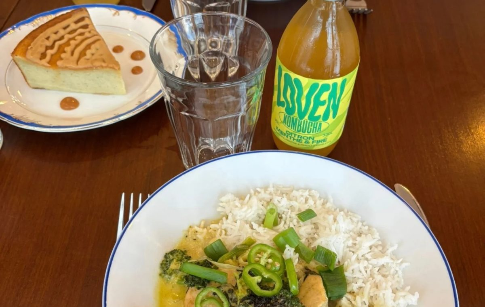
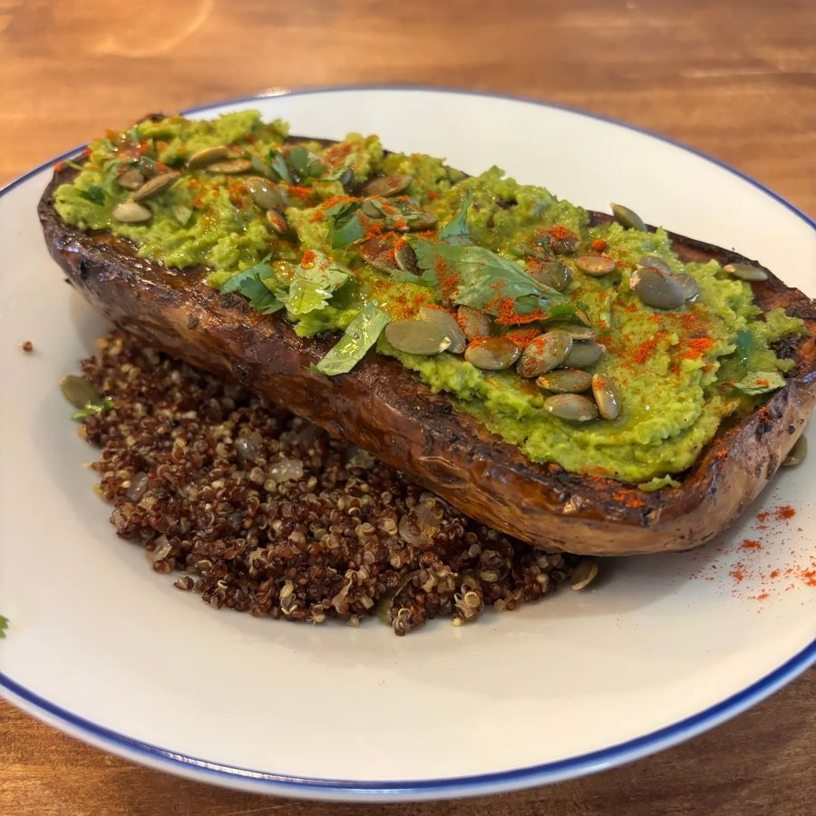
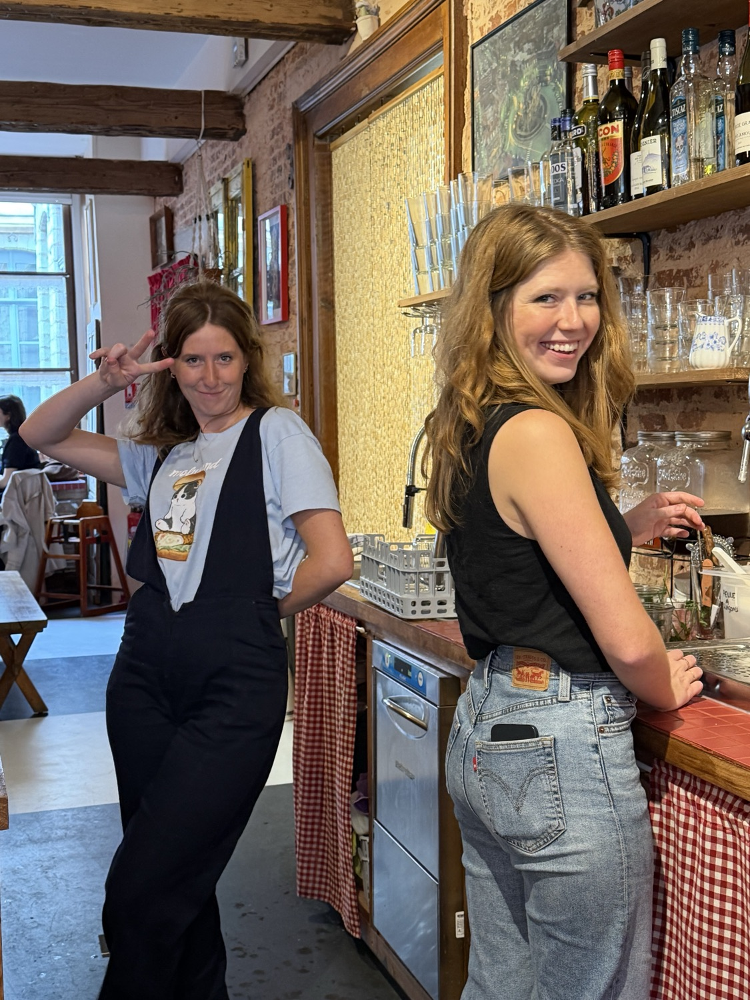
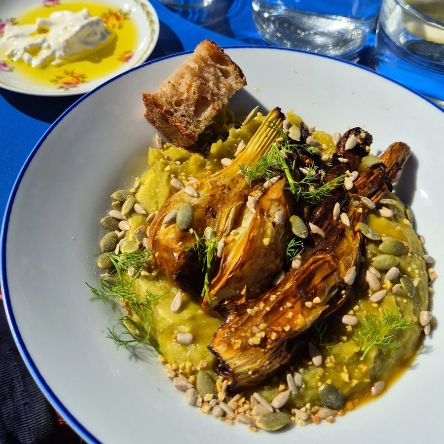

🥕
Ses produits frais, cuisinés & bio
Fournisseurs locaux triés sur le volet, produits de saison et bio autant que possible. C'est sans chichis, et on mange bon.
Café · Cafétéria · After-work — au cœur de Lille
On y VIT, on y MANGE, on y CRÉE.
Une cantine de quartier bien secouée. Produits frais, locaux et bio, faits maison, et un petit vent de liberté — du lundi au samedi, 169 rue Pierre Mauroy.
Tous les samedis · 11h – 14h30
Le rendez-vous du week-end : pains grillés au levain, œufs comme on les aime, pancakes maison et boisson artisanale, et le café qu'il vous faut. Sucré, salé, végé, végan, sans gluten — il y en a pour tout le monde. On s'installe, on partage, on prend le temps.



Un café vivant, ouvert de 9h à 19h en plein cœur de Lille. Un lieu de vie et de bouche, à la fois café du matin, cantine du midi, pause goûter et after-work — un lieu vivant et animé, entre concerts et animations. Une esthétique libre, un brin absurde, toujours joyeuse, clin d'œil au mouvement Dada, qui prône la liberté de création.
Fournisseurs locaux triés sur le volet, produits de saison et bio autant que possible. C'est sans chichis, et on mange bon.
Une chaleur humaine, un cadre accueillant, une terrasse ensoleillée l'après-midi. On vient, on revient.
Déco arty, mise en avant d'artistes locaux, cadavres exquis et ateliers. Un café qui nourrit le corps et l'imaginaire.

Carole, l'aînée, ancienne travailleuse sociale — créative, enthousiaste, le sens du contact inné. Marie, la cadette, formée en gestion avec une expérience en restauration — méthodique, déterminée, le palais fin et exigeant.
À leurs côtés : Malika, cheffe aux pâtisseries incroyables et à la cuisine maison (inspirations thaï, italienne, coréenne, française), et Julie, serveuse de confiance qui suit le projet depuis les premiers jours.
Trois exigences : simple, de qualité, savoureux. À consommer sur place ou à emporter.



Carte indicative, susceptible d'évoluer au fil des saisons et des envies. 🐎
Une à deux fois par semaine, DADA ouvre ses ateliers — pour les petits et les grands. Un espace de rencontre, de partage et d'ouverture, où l'on dessine, on assemble des cadavres exquis, on bricole. Et le soir venu, l'ambiance change : place aux concerts et aux soirées.
Dessin, collage, DIY… 1 à 2 fois par semaine, pour adultes et enfants. Suivez l'agenda sur Instagram.
Une petite galerie qui met en lumière les artistes locaux — dont ceux qui ont habillé les murs du lieu. Les murs changent, le lieu vit.
Le soir, l'ambiance change : concerts, lives, after-work et soirées. DADA se prolonge, souvent jusque tard.
Séminaire d'équipe, soirée privée, anniversaire, lancement, after-work, atelier d'entreprise… On privatise le lieu (ou une partie) et on imagine ensemble la formule qui vous ressemble : cuisine maison sous forme de buffet (ou une formule sur mesure), boissons et ambiance arty.
Buffet ou formule sur mesure — capacité, formules et devis : dites-nous tout via le formulaire ci-contre.
169 rue Pierre Mauroy
59800 Lille
En plein cœur de Lille, à deux pas de la Grand-Place et de la gare.
Ouvert aussi le soir — souvent les jeudis & vendredis, jusque tard (concerts, soirées, privatisations). Suivez l'agenda sur Instagram.